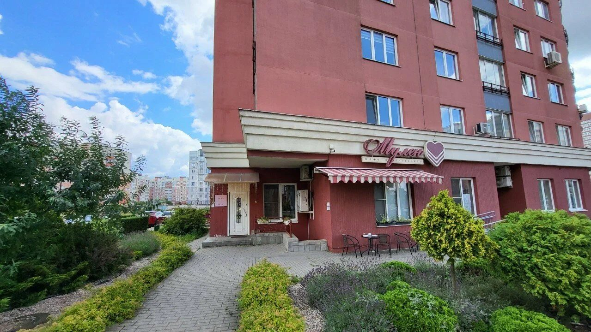
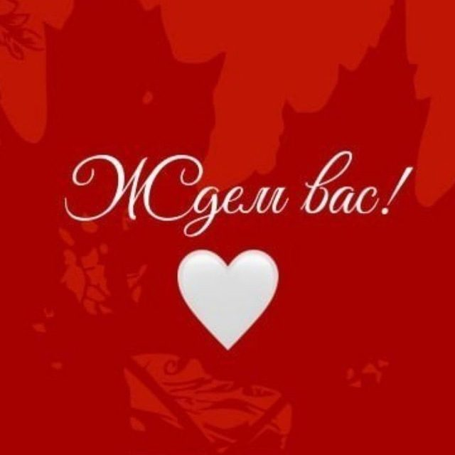

Кофейня · улица Яна Чечота, 7
Мулен
Кофе, витрина с десертами и светлый зал с кремовыми стульями и синими шторами. Заходите утром с 7:30 или вечером до 21:30.
СейчасОткрытодо 21:30♥


Адресулица Яна Чечота, 7до метро «Малиновка» около 230 м
ОткрытоКаждый день 07:30–21:30
Телефон+375 44 796-74-33
С нашей витрины
У каждого десерта свой ценник с сердечком. Вот кусочек витрины.
Тарталетки
Тирамису и эклеры
Фисташка и малина
Макаронс
Зал, где хочется остаться
Светлый зал с большими окнами и синими шторами, кремовые стулья с узорной обивкой, белый буфет с фарфоровыми домиками. На столиках стоят свежие цветы.
